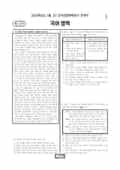

문제지

전국연합학력평가 · 시·도교육청 주관
2023년 3월 고2 학력평가 국어 1등급컷은 원점수 79점(추정), 표준점수 최고점은 158점입니다.
원점수 1등급컷은 공식 발표값이 아니라 EBSi·입시기관 값입니다. 등급별 값은 등급컷 표, 출처 구분은 데이터 원칙에 있습니다.

시험지를 먼저 풀어 보세요. 등급컷·표준점수·난이도는 흐리게 가려 뒀어요.
| 등급 | 원점수 | 표준점수 | 백분위 | 누적 |
|---|---|---|---|---|
| 1 | 79 | 136 | 96 | 4.49% |
| 2 | 70 | 126 | 89 | 11.43% |
| 3 | 61 | 116 | 77 | 23.17% |
| 4 | 51 | 106 | 60 | 40.99% |
| 5 | 39 | 93 | 40 | 61.82% |
| 6 | 29 | 82 | 23 | 78.05% |
| 7 | 22 | 75 | 11 | 89.45% |
| 8 | 18 | 70 | 4 | 96.73% |
등급별 컷 · 입시기관 3곳 원점수 추정 종합(EBSi·메가스터디·대성마이맥) · 만점 100점
| 등급 | 표준점수 이상 | 인원(명) | 비율 |
|---|---|---|---|
| 1 | 136 | 13,689 | 4.07% |
| 2 | 126 | 26,630 | 7.92% |
| 3 | 116 | 40,950 | 12.18% |
| 4 | 106 | 54,949 | 16.34% |
| 5 | 93 | 69,140 | 20.57% |
| 6 | 82 | 57,503 | 17.1% |
| 7 | 75 | 38,191 | 11.36% |
| 8 | 70 | 22,292 | 6.63% |
| 9 | 51 | 12,858 | 3.82% |
시·도교육청 공개 자료
출처: 시·도교육청이 공개한 전국연합학력평가 성적 분석·통계자료(공개 자료 보기).
EBSi 응답자 기준으로 가장 많이 틀린 문항은 31번(2점)이고, 오답률은 81%입니다. 상위 15문항 중 4문항은 정답보다 한 오답을 고른 사람이 더 많았습니다(31번: 정답 ① 19%, ⑤ 37.7%). 오답률 50%를 넘은 문항은 15개입니다.
| 순위 | 문항 | 배점 | 오답률 | 정답 | 많이 고른 오답 |
|---|---|---|---|---|---|
| 1 | 31번 | 2점 | 81% | ① | ⑤ 37.7% |
| 2 | 20번 | 2점 | 79.7% | ② | ③ 25.5% |
| 3 | 18번 | 2점 | 77.2% | ⑤ | ③ 23.3% |
| 4 | 16번 | 2점 | 69.5% | ② | ① 27% |
| 5 | 19번 | 3점 | 67.3% | ⑤ | ④ 26.5% |
| 6 | 22번 | 2점 | 66.5% | ③ | ④ 31.7% |
| 7 | 41번 | 2점 | 65.4% | ② | ③ 35.2% |
| 8 | 23번 | 2점 | 65.2% | ③ | ⑤ 20.4% |
| 9 | 13번 | 2점 | 65.1% | ③ | ① 29.2% |
| 10 | 25번 | 2점 | 62.8% | ④ | ③ 34.8% |
| 11 | 17번 | 2점 | 61.8% | ① | ② 23% |
| 12 | 21번 | 2점 | 60.6% | ② | ④ 29.6% |
| 13 | 24번 | 3점 | 59.7% | ⑤ | ③ 22.4% |
| 14 | 27번 | 2점 | 52.7% | ① | ③ 13.5% |
| 15 | 9번 | 3점 | 51.2% | ② | ④ 26.5% |
EBSi 가채점 응답자 기준 · 전 문항 중 오답률 상위 15문항
출처: EBSi 역대 등급컷·오답률 공개 화면. 가채점에 참여한 EBSi 이용자 응답이라 전체 응시자 정답률과는 다를 수 있습니다.
발행 기관: 시·도교육청(전국연합학력평가). 파일 위치: 이 사이트가 보관한 사본. 저작권은 발행 기관에 있습니다. 원본과 다르거나 게시 중단이 필요하면 연락처로 알려 주세요. 등급컷 출처 구분은 데이터 원칙에서 설명합니다.
막대 색은 역대 대비 난이도 · 진한 막대가 이 시험 · 막대를 누르면 그 회차로 이동
| 회차 | 1등급컷 | 표점 최고 | 1등급 표점 | 난이도 |
|---|---|---|---|---|
| 3월 학평2023년 고2이 시험 | 79 | 158 | 136 | 매우 어려움 |
| 11월 학평2022년 고2 | 90 | 142 | 134 | 쉬움 |
| 9월 학평2022년 고2 | 85 | 150 | 136 | 어려움 |
| 6월 학평2022년 고2 | 91 | 141 | 133 | 매우 쉬움 |
| 3월 학평2022년 고2 | 95 | 135 | 131 | 매우 쉬움 |
| 11월 학평2021년 고2 | 96 | 133 | 130 | 매우 쉬움 |
| 6월 학평2021년 고2 | 94 | 136 | 131 | 매우 쉬움 |
| 3월 학평2021년 고2 | 76 | 167 | 138 | 매우 어려움 |
국어는 교육청 채점 결과 1등급 구분 표준점수가 136점, 최고점이 158점이었고 최고점자는 19명이었습니다. 1년 전 3월 고2(1등급 131점, 최고점 135점)보다 최고점이 23점 높았고, EBSi 가채점 응답자 기준 오답률 50%를 넘은 문항이 15개였습니다.
가장 많이 틀린 31번(2점, 81.0%)은 박인로 「노계가」와 이태준의 수필 「자연과 문헌」의 공통점과 차이를 묻는 문항으로 응답의 37.7%가 같은 오답(5번)을 골랐습니다. 41번(65.4%)은 김시습 「이생규장전」의 내용을 묻는 문항이었습니다.
16~20번은 세포핵의 DNA가 mRNA로 전사되어 단백질로 합성되는 과정과, DNA나 RNA를 유전 물질로 가진 바이러스가 세포에 들어가는 과정을 다룬 지문입니다. 엔도솜 내부의 pH가 낮아지는 까닭을 추론하는 20번(79.7%), ⓐ~ⓓ의 관계를 묻는 18번(77.2%), 16번(69.5%), 19번(67.3%)까지 네 문항이 모두 67%를 넘었습니다.
21~25번은 임차인이 보증금을 맡기고 주택을 쓴 뒤 돌려받는 주택 임대차 지문으로 22번(66.5%), 23번(65.2%), 25번(62.8%)이 50%를 넘었습니다. 26~30번은 19세기 이후 사적 공간과 공적 공간이 분리되며 생긴 출퇴근 관념을 다뤘습니다.
문학은 「노계가」와 「자연과 문헌」(31~34번), 주인공 신장균에 맞서는 악역의 졸개 역을 맡은 단역 배우 '그'를 그린 조해일 「매일 죽는 사람」(35~38번), 부모님께 문안드리지 못한 이생이 최씨와 이야기하는 김시습 「이생규장전」(39~42번), 윤동주 「소년」과 김기택 「봄날」(43~45번)이었습니다.
화법·작문은 먹을 소개한 발표(1~3번), '영화도 2배속으로 보는 시대'를 읽은 독서 토론과 감상문(4~7번), 패스트 패션의 의류 폐기 문제를 다룬 글(8~10번)이었고, 문법은 'ㅎ'이 포함된 음운 변동을 다뤘습니다.